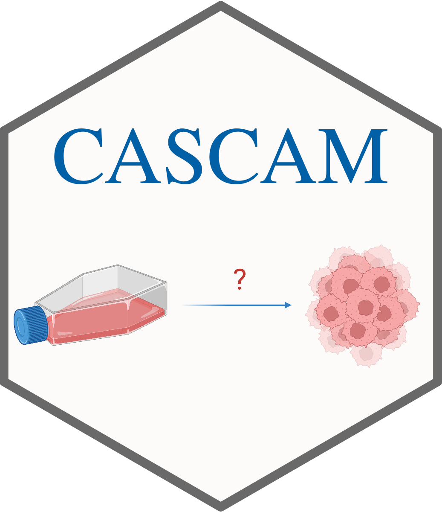
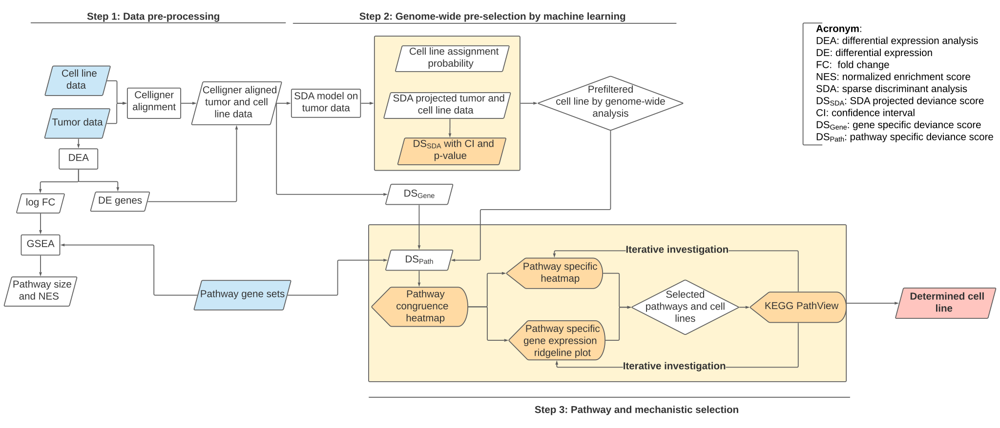

CASCAM (Congruence Analysis and Selector of CAncer Models)
CASCAM is an R package for analyzing and selecting the appropriate cancer models (cell lines, PDOs or PDXs) based on the patients’ tumor information. The figure below shows the framework of our method. Several statistics are defined to measure the distance between tumor samples and the cancer models.

With the help of CASCAM, users can:
- Identify the genome-wide appropriate cancer models visually and statistically.
- Evaluate the genome-wide pre-selected cancer models in different pathways.
- Explore the similarity between the tumor samples and the cancer model in the pathway topology level.
- Use the above mentioned tools through an R Shiny app interactively.
The complete package documentation and instruction can be found here.
Installation
The package can be downloaded and installed from GitHub.
install.packages('devtools')
devtools::install_github('jianzou75/CASCAM')If the package cannot be installed successfully, it is needed to ensure that the dependency packages are installed. This package is based on R (>= 4.0.5), and the R code for installing the dependent packages are:
## from CRAN
CRAN.packages <- function(pkg){
new.pkg <- pkg[!(pkg %in% installed.packages()[, "Package"])]
if (length(new.pkg))
install.packages(new.pkg, dependencies = TRUE)
}
CRAN.packages(c("sparseLDA", "doParallel", "boot", "caret", "magrittr",
"ggplot2", "ggrepel", "patchwork", "dplyr", "ggridges",
"reshape2", "grid", "png", "ggplotify", "Seurat", "mclust",
"shinythemes", "shiny"))
## from Bioconductor
Bioconductor.packages <- function(pkg){
new.pkg <- pkg[!(pkg %in% installed.packages()[, "Package"])]
if (length(new.pkg))
BiocManager::install(new.pkg, dependencies = TRUE)
}
Bioconductor.packages(c("pathview", "DESeq2", "fgsea", "qusage"))